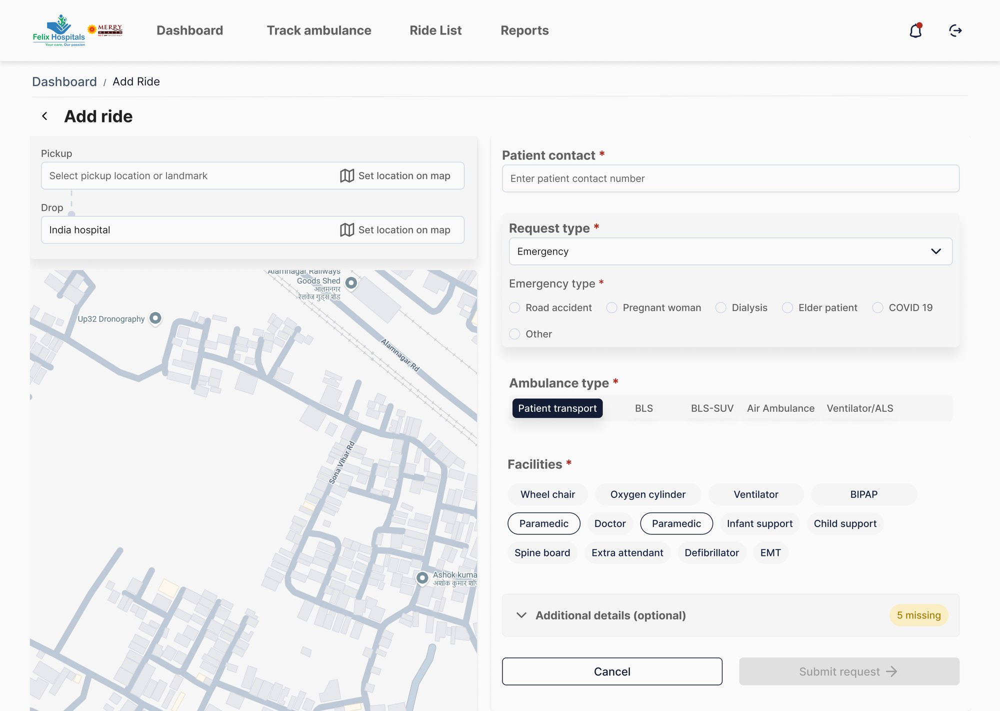
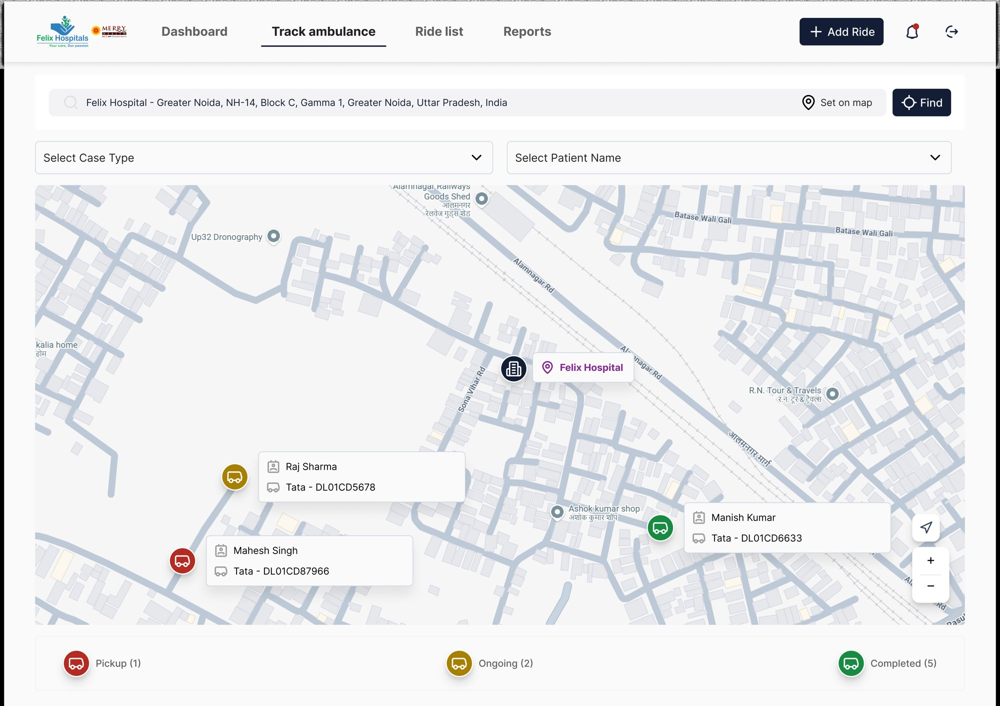
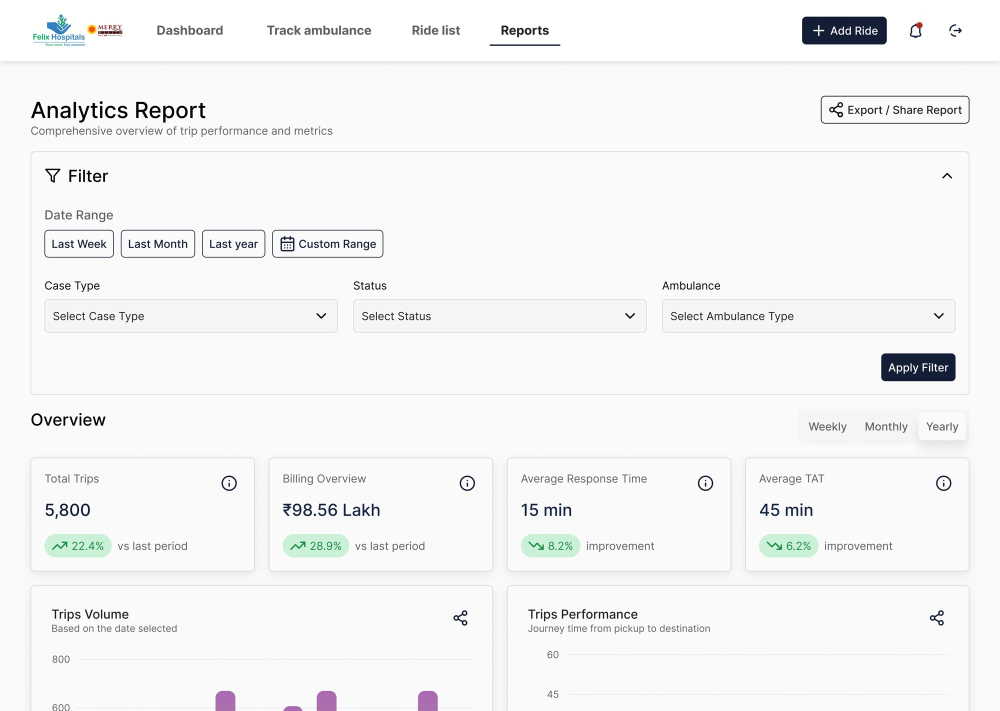

02 — THE BUSINESS
A B2B product whose revenue depends on hospitals actually using it.
Merry Health connects Tier-2 and Tier-3 private hospitals (200+ beds) with ambulance partners. It sells to hospital heads of sales and marketing — faster pickups from smaller-town catchments mean more admissions.
About 30 hospitals were live, and 50–60% of rides were hospital-to-hospital transfers. The pricing history explains the stakes: a ₹3,000/month subscription failed because hospitals are price-sensitive. Merry Health moved to a ₹200 platform fee per ride, so revenue now scales with every request that goes through the system — and disappears with every one that doesn't.
GOAL 01
Grow ride volume on-platform
More rides through the system = more revenue. Every off-platform WhatsApp request is lost billing.
GOAL 02
Clean, timestamped data
Reporting, billing and SLAs all depend on records being accurate — not filled in after the shift.
GOAL 03
Sign up more hospitals
Prove reliability to hospital management. A platform that ops teams actually use is the only pitch that works.
03 — THE GAP
The workflow on paper and the workflow on the ground were two different systems.
DESIGNED FLOW · ~5% OF REQUESTS
→Admin logs in, dashboard kept open at ED desk
→Add booking: phone, Maps pin, ambulance type
→Ops assigns nearest ambulance from recommended list
→Statuses update — 5-step ladder to ride completed
ACTUAL FLOW · ~95% OF REQUESTS
→Admin types name, area, phone into WhatsApp group
→Merry Health ops re-enters it into the dashboard
→Driver gets called on feature phone, verbal confirmation
→Statuses toggled manually, posted back to WhatsApp
FIG. 1 — THE CURRENT SYSTEM FLOW, MANUAL LOOPS FLAGGED IN RED
Why it happened, and what it cost.
WHY IT HAPPENED
Emergency staff are overstretched, on the move and rarely at a desk. Many aren't comfortable with digital tools — WhatsApp needs no learning. No regulation requires digital tracking, so the dashboard was a nice-to-have.
WHAT IT COST
The ops team became a human integration layer, 24×7. Timestamps — and the reports and invoices built on them — were only as good as manual entry. Hospitals saw the dashboard as a month-end report, not a live tool.
Two incidents that shaped the data model.
01 A 130 kg patient on a third floor with no lift and narrow stairs. Lift, floor and stretcher-fit became booking fields.
02 An ambulance dispatched without oxygen after a verbal miscommunication. Equipment became an explicit selection, never a phone-call detail.
04 — WHO'S IN THE CHAIN
Ten actors touch every ride. One of them decides whether the product gets used.
I mapped every stakeholder by how directly they affect adoption, dispatch speed and data quality. Hospital admins came out as the lever — they start every request, so their channel choice decides whether a ride is recorded, billed and tracked at all.
PRIMARY · DESIGN FOR NOW— Hospital admins, Ambulance drivers, Patients & families
These directly decide adoption, response time and trust. The hospital admin starts every request; their channel choice is the product's adoption rate. Drivers determine tracking reliability. Patients and families set the bar for what "good" looks like.
SECONDARY · DESIGN WITH— Merry Health ops team, Hospital management
They run the backend and sign renewals but aren't the focus of phase 1. The ops team is the most affected by the current manual process — their workload drops directly when admins log requests on-platform.
TERTIARY · INDIRECT— Marketing desks, Call centres, Fleet owners, Hospital IT, Regulators
They affect data quality at the edges or matter at scale. Not the primary design target, but their constraints (feature phones, compliance requirements, billing cycles) shaped every recommendation.
05 — PROCESS
Understand the decisions before designing the screens.
Every step produced an artifact the next one depended on. Research came before any screens — an emergency workflow you don't understand will fail in ways no usability test catches.
01
Admin decision map
Every decision a hospital admin makes, with the information each needs, why it matters, the channel (WhatsApp, call, dashboard), who they talk to, the actions taken, how they verify, and what "done" means.
02
Data audit
Every data point mapped to source, user, purpose and frequency — then cut to the minimum needed to dispatch: phone number, pickup pin, ambulance type. Everything else became conditional or deferred.
03
Scenario & journey mapping
A patient collapses at home in a Tier-2 city. I traced the admin's 8-step flow, covering touchpoints, thoughts, feelings and expectations, then mapped the ideal journey for high-priority scenarios.
04
Phase-wise system audit
UX and UI issues in each dispatch phase, scored by probability × impact and checked against Nielsen's heuristics, then merged into a severity for each phase.
05
Workflow, design problems & opportunities
A screen-level workflow with happy paths, error states, design problems ("how might we…") and design opportunities for every screen.
06
6-Ups ideation → hi-fi
Six concepts for each screen, judged on pros, cons and heuristics. I chose a hybrid for each, then produced annotated sketches, UI specs, a hi-fi prototype and the final client walkthrough.
FIG. 2 — STEP 05 IN PRACTICE: SCENARIO 2, MULTIPLE ONGOING RIDES. EVERY SCREEN WITH ITS GOAL, ERROR STATES, DESIGN PROBLEMS AND OPPORTUNITIES
06 — THE AUDIT
Three of five phases were critical, and none of them were UI problems.
I set myself one rule for recommendations: no interface words. Button, tab, menu, icon, color, layout were all off-limits. Each recommendation had to state the failing workflow step, how it should be restructured, the expected impact, and what it fixes in other phases.
PHASE
SEVERITY
WHAT BROKE
WORKFLOW RECOMMENDATION
Intake
CRITICAL
Details go on paper first, then get retyped. WhatsApp requests are re-entered. Simultaneous calls overwrite each other.
Progressive capture: dispatch on the minimum data, complete the rest after the emergency is under control, and never lose an entry to an interruption.
Assign
CRITICAL
Ops call driver after driver. Urgency lives in someone's memory. Hospitals get no confirmation that dispatch happened.
System-led assignment with urgency surfaced up front, plus confirmation sent back to the hospital the moment a driver accepts.
En route
CRITICAL
No live tracking. Admins chase drivers for status. Active rides are buried in a flat table.
Continuous tracking that pushes status changes and exceptions to the admin, so nobody has to call to find out.
Handover
MAJOR
Arrival is confirmed by hand, so the timestamps behind SLAs and billing are unreliable.
A verified handover step: arrival confirmed by geofence where it works, by a structured checklist where it doesn't.
Close case
WORKAROUND
Bulk closures at end of shift. Unchecked closures overwrite data. Reports don't match across hospitals.
Closure as a validation step: the system flags missing or conflicting events before a trip can be closed.
Severity = probability × impact. Critical phases directly affect whether the ambulance arrives on time; Major and Workaround affect data, reporting and accountability.
FIG. 3 — PHASE-WISE AUDIT: INEFFICIENCY MAPPED TO OBSERVED FAILURE AND WORKFLOW RECOMMENDATION
07 — WHAT CHANGED IN THE PLAN
Adoption before automation.
The brief pointed at automation — the team's first idea was AI-assisted dispatch: record the hospital's call, convert speech to text, auto-fill and auto-assign. In the vision call it fell apart. It needed integration with hospital phone systems, low-confidence fields would bring humans back in to verify, drivers didn't trust automated calls, and a voice note still can't give a precise pickup pin.
Instead of replacing behaviour, the product had to absorb it: meet admins in WhatsApp, structure what they already send, and earn trust in the record before adding intelligence on top.
PHASE 1 · NOW
Stabilise & drive adoption
Dashboard + WhatsApp sync, reliable tracking, less manual dependency.
PHASE 2 · NEXT
Assistive automation
Structured WhatsApp entry, voice input for staff, rule-based dispatch suggestions.
PHASE 3 · GATED
Voice intelligence
AI call-to-dispatch — only once adoption reaches 70% and manual fallbacks are tested.
FIG. 4 — THREE IDEAL FLOWS EXPLORED: DASHBOARD + WHATSAPP INTEGRATION, WHATSAPP ONLY, AND PATIENT-TO-SYSTEM MAXIMUM AUTOMATION
08 — STRATEGY
Three decisions, signed off by the client.
1
DECISION
WhatsApp stays the front door.
THE DECISION
Requests and status broadcasts flow through the channel admins already use. Fighting it had already cost the product its adoption.
WHY IT MATTERS
Every interface that requires a login competes with a habit. WhatsApp doesn't. The decision freed the design to focus on what happens after the request arrives, not on capturing the request itself.
2
DECISION
The dashboard becomes the record.
THE DECISION
Every update — from any channel — lands in one timestamped source of truth for tracking, reporting, billing and future compliance.
WHY IT MATTERS
Hospitals weren't using the dashboard because it didn't reflect reality. Making it the definitive record — not a copy of reality — changes what it's worth to open.
3
DECISION
A manual fallback in every critical journey.
THE DECISION
Ambulances are life-critical. Every automated step has a human path for when GPS, network or a driver fails.
WHY IT MATTERS
An emergency product that only works when connectivity is perfect isn't an emergency product. The fallback isn't a workaround — it's the design standard.
 B
B
 C
C
FIG. 5 — WHATSAPP AS THE FRONT DOOR: (A) HOSPITAL ADMIN VIEW · (B) HOSPITAL GROUP BROADCASTS · (C) DRIVER VIEW
09 — WORKFLOW
Designing for the worst hour: five rides live at once.
I built the workflow around the hardest real scenario: several emergencies running in parallel, updates scattered across chats and calls, nurses and families asking "where is the ambulance?" The admin needed to spot the ride in trouble, act, and close every trip with clean data.
SCREEN 1.0
Dashboard
Spot what needs attention across all live rides.
2.0 → 2.1
Active Rides → Ride Details
Compare all live trips, then drill into one for the full picture.
2.2 → 3.0
Delay Alert → Handover
Act on exceptions, then verify arrival with a structured step.
SCREEN 4.0
Trip Closure
Close with clean, validated data — no bulk end-of-shift closures.
Each screen was specified with its goal, entry and exit, primary actions, error states, design problems and design opportunities before any ideation began.
10 — DESIGN DECISIONS
Six concepts per screen, one hybrid, and the trade-off stated.
2.0
ACTIVE RIDES
A priority list that sorts itself.
THE DECISION
Rides cluster into Critical, At Risk and On Track. No update for several minutes, or a slipping ETA, moves a ride up. It works the same at 3 rides or 50.
TRADE-OFF
Overrides chronological order and needs thresholds tuned with the ops team.
2.1
RIDE DETAILS
Ride health in two seconds.
THE DECISION
A health summary on top (status, ETA, driver state, halts), then the live map and event timeline side by side, with alerts that suggest the next action.
TRADE-OFF
Depends on reliable GPS and needs firm visual hierarchy to avoid density.
2.1.1
MAP VIEW
Planned vs actual route.
THE DECISION
Deviations are highlighted, with state labels like "No movement 3+ min" or "Off-route", and a mini timeline strip so context isn't lost while zoomed in.
TRADE-OFF
Higher engineering effort for route and traffic data.
2.2
DELAY ALERT
Root cause first, then the action.
THE DECISION
The panel says why (a halt, a network drop, an ETA jump), puts three actions up front (call driver, call ops, notify hospital), and codes severity so minor delays stay quiet.
TRADE-OFF
False alerts erode trust, so thresholds must be conservative.
3.0
HANDOVER
Its own step, not a field on a page.
THE DECISION
I kept handover out of Ride Details on purpose: tracking is for watching, handover is for verifying. A dedicated panel runs geofence arrival with a checklist fallback across hospital, driver and admin.
TRADE-OFF
One extra step — kept because it creates the timestamp billing depends on.
4.0
TRIP CLOSURE
The system checks before the human signs.
THE DECISION
Auto-validation flags missing timestamps, conflicting arrival data and bulk-closure patterns. A trip can't close until its record is complete — which ends end-of-shift bulk closing.
TRADE-OFF
Requires standardised status events from the driver side.
11 — THE EXPERIENCE
Built for an admin with a phone in one hand.
01 · DASHBOARD
A command centre, not a monthly report.
—Notification centre for delays, arrivals and unresponsive drivers
—Live ride status map of everything heading to the hospital
—Case severity trends for staffing and peak hours

02 · ADD RIDE
Dispatch on the minimum, complete the rest later.
—Map-based pickup and drop — no long address typing
—Emergency short form showing only the essential fields
—Equipment and facilities as explicit selections
—Missing-field indicators instead of blocking validation

03 · RIDE DETAILS
Answers "where is it?" without a phone call.
—Trip timeline and live vehicle map together
—Status snapshot: last update, distance left, speed
—Call driver and escalate when the system can't resolve it
04 · MARK HANDOVER
An audit trail by design.
—Hospital → driver → admin confirmations, in order
—Detected hospital, arrival time and GPS confidence shown
—Close is enabled only when every check passes

05 · ANALYTICS & REPORTS
Proof of value for hospital leadership.
—KPI cards for trips, billing, response time and turnaround
—Filters by date, case type, status and ambulance type
—PDF, CSV and Excel exports for month-end reviews

12 — OUTCOME
An agreed roadmap and a measurable definition of success.
The engagement ended with a 20-minute strategy pitch to the client and a final walkthrough of the hi-fi prototype. Because the real problem was adoption, not "a better dashboard", I aligned the client on four KPIs to track after launch.
ADOPTION
≥70%
Share of requests raised through the dashboard or WhatsApp automation. Baseline ~5%. Phase 3 gate.
OPERATIONS
<20 min
Average dispatch response time, from request to pickup. On time = under 20 min.
RELIABILITY
En route ✓
Tracking link delivery success rate to patient families. En Route was rated Critical in the audit.
ENGAGEMENT
30+ hospitals
Weekly active hospitals across dashboard and WhatsApp. Starting base: ~30 live hospitals.
Before: Chats, calls, paper notes — a dashboard filled in after the fact.
Designed for: One record fed by the channel admins already use, with push updates and verified closure.
The engagement ended at design handover. These are the KPIs the client committed to tracking after launch, not measured results.
13 — CONSTRAINTS
What I worked within, and how I handled it.
WHAT I WORKED WITHIN
→ Four weeks from brief to handover
→ A distributed team across time zones
→ Client inputs arriving late
→ Drivers on feature phones; GPS and network unreliable
→ Price-sensitive buyers: nothing could add cost or training load
HOW I HANDLED IT
→ Used severity scores to decide what not to design
→ Used workflow maps as the shared language with the client and team
→ Wrote recommendations engineers could size, not mockups to admire
→ Designed a fallback for every automated step
14 — REFLECTION
I could have designed the smartest dispatch system. I designed the one hospitals would actually use first.
01
Fixing individual screens wouldn't have moved adoption. Changing the workflow could.
02
In emergency software, the product's real competitor is WhatsApp — and you can't out-feature it. You have to integrate with it.
03
A team moves fastest when each person owns a slice end to end. Mine was the hospital admin.